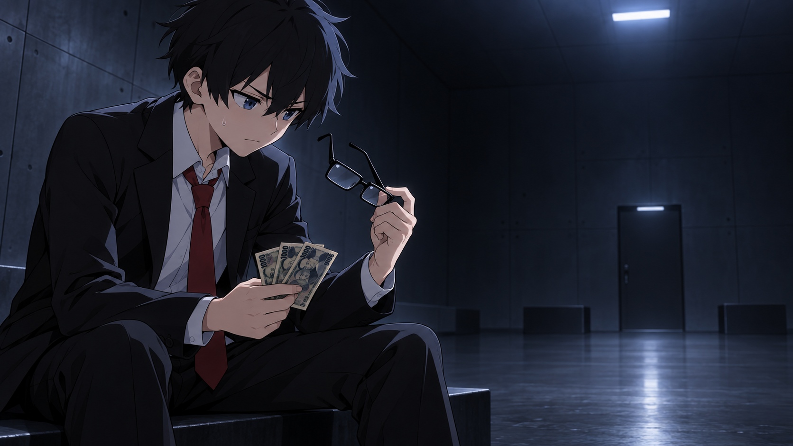
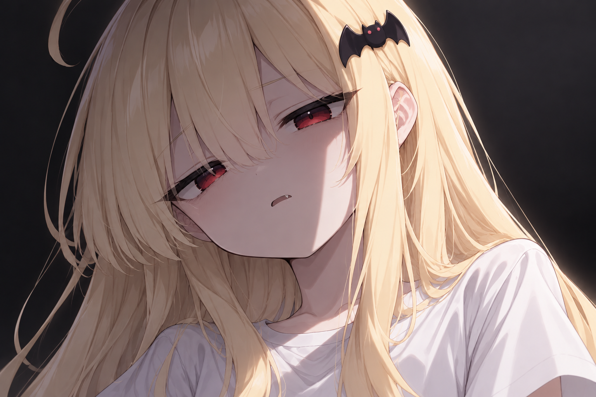

THE FIRST ENCOUNTER
すべては、
見知らぬ部屋から。
目が覚めたら、突然見知らぬ部屋にいた！
そこで出会ったのは、謎の美少女吸血鬼・キュウちゃん。
奇妙で理不尽な雑学の旅が始まる。


THE BEGINNING
物語のはじまり
太郎とキュウちゃんの出会いから、物語を楽しもう。
続きはYouTubeチャンネルへ ↗THE FIRST ENCOUNTER
目が覚めたら、突然見知らぬ部屋にいた！
そこで出会ったのは、謎の美少女吸血鬼・キュウちゃん。
奇妙で理不尽な雑学の旅が始まる。


THE BEGINNING
太郎とキュウちゃんの出会いから、物語を楽しもう。
続きはYouTubeチャンネルへ ↗